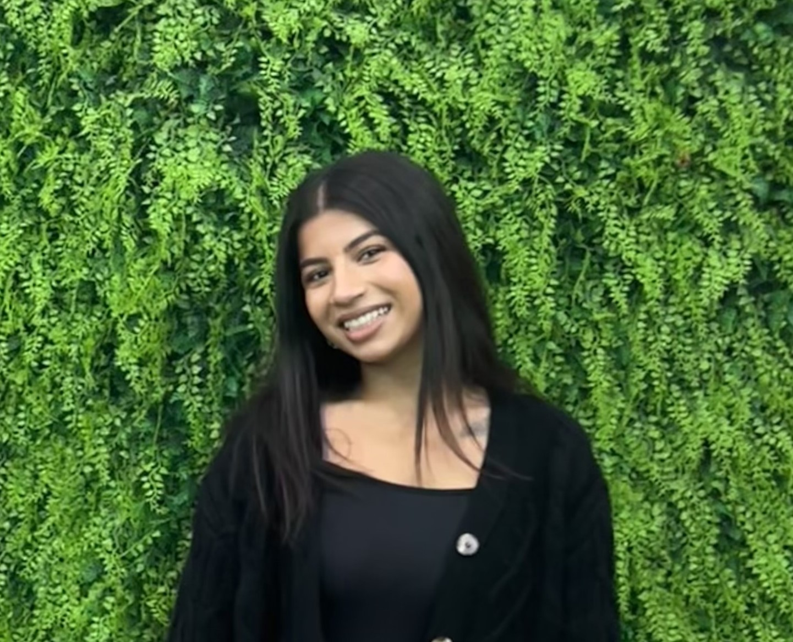

Jhanvi Chauhan

Objective
Enthusiastic and highly motivated recent graduate with strong foundational skills in software engineering,
including proficiency in VS Code, HTML, Java, Python, and Ruby. Seeking an entry-level software engineering
position where I can apply my technical skills, problem-solving abilities, and passion for innovation to
contribute to the development of high-quality software solutions. Eager to learn and grow within a dynamic
team, I am committed to leveraging my knowledge and enthusiasm to support the organization's goals and
technological advancements.
Education
- Victorian Certificate of Education at Pascoe Vale Girl's College (2018 - 2022)
- Bachelor of Software Engineering at Swinburne University (2023 - now)
Work Experience
- Customer Service Assistant - Kmart
March 2021 - August 2022
- Provided exemplary customer service by professionally greeting and assisting customers,
operating cash registers, and managing self-checkout stations.
- Maintained store cleanliness, organized shelves, and restocked inventory to ensure a
pleasant shopping environment.
- Effectively handled customer inquiries and resolved complaints, escalating complex
issues to the store manager when necessary.
- Thrived in a fast-paced environment, demonstrating the ability to perform under
pressure and collaborate with team members to achieve business objectives.
- English Tutor - S.A.M
March 2023 - Now
- Prepared class materials in advance, facilitated engaging learning sessions,
and conducted timely revisions to reinforce student comprehension
- Provided individualized support to students, addressing queries promptly
and fostering a conducive learning environment.
- Collaborated with management to tailor teaching approaches to meet
students' needs, enhancing verbal and social communication skills.
- Maintained accurate records of tutoring hours and demonstrated
punctuality and organizational skills.
- Staff Member - Lord of the Fries
May 2023 - March 2024
- Prepared kitchen for service by organizing ingredients and equipment,
ensuring efficient workflow during peak hours.
- Maintained cleanliness and sanitation standards, including washing equipment,
wiping surfaces, and replenishing supplies.
- Demonstrated effective communication with team members, followed instructions
diligently, and adapted to a dynamic work environment.
- Prioritized customer satisfaction by promptly fulfilling orders, addressing
inquiries, and resolving concerns.
Skills
- Customer service
- Rapid pace
- Resilience
- Communication
Achievements
- TATA Consultancy Services through GoIT for girls (2020)
- Participation in GradGirls from WomenInSTEM (2024)
Other: